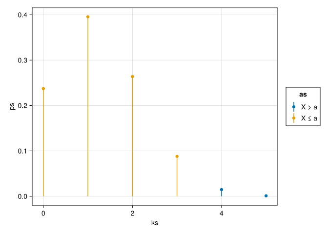
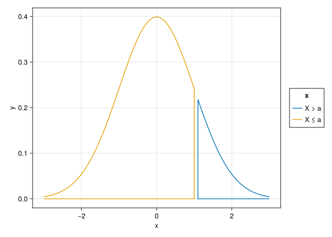
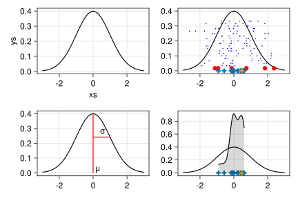
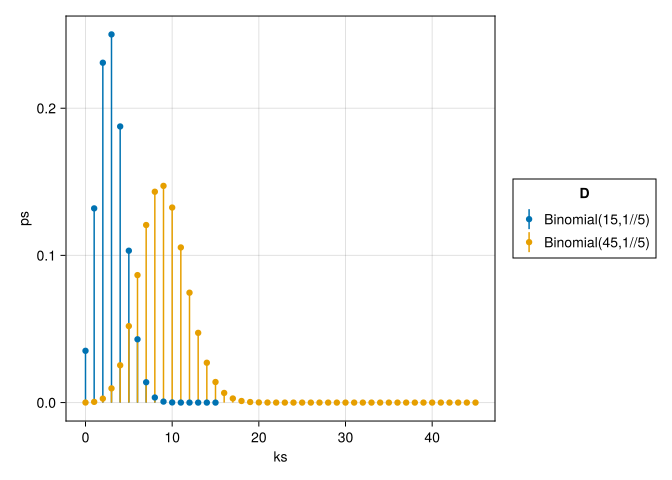
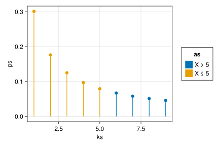

using Distributions
using StatsBase, DataFrames
using CairoMakie, AlgebraOfGraphics7 Probability distributions
Exploratory data analysis differs from statistics. A statistical model for a measurement involves a description of the random nature of the measurement. To describe randomness, the language of probability is used. Much of this language is implemented in the Distributions package of Julia, loaded below with other packages:
7.1 Probability
This section quickly reviews the basic concepts of probability.
Mathematically a probability is an assignment of numbers to a collection of events (sets) of a probability space. These values may be understood from a model or through long term frequencies. For example, consider the tossing of a fair coin. By writing “fair” the assumption is implicitly made that each side (heads or tails) is equally likely to occur on a given toss. That is a mathematical assumption. This can be reaffirmed by tossing the coin many times and counting the frequency of a heads occuring. If the coin is fair, the expectation is that heads will occur in about half the tosses.
The mathematical model involves a formalism of sample spaces and events. There are some subtleties due to infinite sets, but we limit our use of events to subsets of finite or countably infinite sets or intervals of the real line. A probability measure is a function \(P\) which assigns each event \(E\) a number with:
- \(0 \leq P(E) \leq 1\)
- The probability of the empty event is \(P(\emptyset) = 0\), the probability of the the sample space is \(P(\Omega) = 1\).
- If events \(E_1, E_2, \dots\) are disjoint then the probability of their union is the sum of the individual probabilities.
A random variable, \(X\), is a function which takes an outcome (an element of an event) in a sample space and assigns a number. Random variables naturally generate events through sets of the type \(\{X = k\}\) for some \(k\). This event being all outcomes for which \(X\) would be \(k\). Similarly, \(\{X \leq a\}\) for some \(a\) describes an event. These are the typical events of statistics.
The rules of probability lead to a few well used formulas: \(P(X \leq a) = 1 - P(X > a)\) and for discrete random variables \(P(X \leq k) = \sum_{j \leq k} P(X = j)\). Both illustrated in Figure 7.1.


A distribution of a random variable is a description of the probabilities of events generated by a random variable. For our purposes, it is sufficient to describe events of the type \(\{X \leq a\}\), \(\{X < a\}\), or \(\{X = a\}\), others being formed through intersections and unions. A valid description of the cumulative distribution function, \(F(a) = P(X \leq a)\), (abbreviated cdf) describes the distribution of a random variable.
There are 2 types of distributions where a related function describes the distribution, discrete and continuous distributions.
A discrete random variable is one which has \(P(X = k) > 0\) for at most a finite or countably infinite set of numbers. For example, if \(X\) is the number of coin tosses producing heads in \(n\) tosses, then the finite \(k\)s are \(0,1,2, \dots, n\). Whereas, if \(X\) is the number of coin tosses needed to toss one head. The \(k\) would be \(1, 2, \dots\) (with no upper bound, as one could get extremely unlucky). For discrete random variables it is enough to describe \(f(k) = P(X=k)\) for the valid \(k\)s. The function \(f(k)\) is called the pdf (probability distribution function). An immediate consequence is \(\sum_k f(k) = 1\) and \(f(k) \geq 0\).
A continuous random variable is described by a function \(f(x)\) where \(P(X \leq a)\) is given by the area under \(f(x)\) between \(-\infty\) and \(a\). The function \(f(x)\) is called the pdf (probability density function). An immediate consequence is the total area under \(f(x)\) is \(1\) and \(f(x) \geq 0\).
When defined, the pdf is the basic description of the distribution of a random variable. It says what is possible and how likely possible things are. For the two cases above, this is done differently. In the discrete case, the possible values are all \(k\) where \(f(k) =P(X=k) > 0\), but not all values are equally likely unless \(f(k)\) is a constant. For the continuous case there are no values with \(P(X=k) > 0\), as probabilities are assigned to area, and the corresponding area to this event, for any \(k\), is \(0\). Rather, values can only appear in itervals with positive area (\(f(x) > 0\) within this interval) and for equal-length intervals, those with more area above them are more likely to contain values.
A data set in statistics, \(x_1, x_2, \dots, x_n\), is typically modeled by a collection of random variables, \(X_1, X_2, \dots, X_n\). That is, the random variables describe the possible values that can be collected, the values (\(x_1, x_2,\dots\)) describe the actual values that were collected. Put differently, random variables describe what can happen before a measurement, the values are the result of the measurement.
The joint cumulative distribution is the probability \(P(X_1 \leq a_1, X_2 \leq a_2, \dots X_n \leq a_n)\). A common assumption made for statistics is that each of the random variables is
- identically distributed, meaning \(F(a) = P(X_i \leq a) = P(X_j \leq a)\) for each pair \((i,j)\).
- independent, which means that knowing the value of \(X_i\) does not effect the probabilities regarding values for \(X_j\), \(j \neq i\). (If you know a first toss of a fair coin is heads, it doesn’t change the odds that the second toss will be heads.)
With these two assumptions, the random variables \(X_1, X_2, \cdots, X_n\) are termed an iid random sample. For an iid random sample, this simplification applies: \(P(X_1 \leq a_1, X_2 \leq a_2, \dots X_n \leq a_n)=F(a_1)\cdot F(a_2) \cdots F(a_n)\) (independence means “multiply”).
In general, the distribution of a random variable may be hard to describe. For example, suppose the random variable is the sample median, \(M\), of \(X_1, X_2, \cdots, X_n\). With the assumption of an iid random sample, a formula for the distribution of \(M\) can be worked out in terms of the underlying pdf, \(f\) and cdf, \(F\). But without that assumption, it becomes intractable, in general.
When a distribution can not be fully identified, it can still be described. A few basic summaries of a probability distribution are:
The mean or average value. For a discrete distribution this is \(\sum_k k P(X=k)\), which is a weighted average of the possible values, weighted by how likely they are. For a continuous distribution, a similar formula using calculus concepts applies. Both can be viewed from a center of mass perspective. The symbol \(\mu\) or \(E(X)\) (expectation) is used to represent the mean.1
The variance of a probability distribution describes the spread; the standard deviation is the square root of the variance. For a random variable, the variance is described by the average value of the centered random variable, squared: \(E( (X - \mu)^2 )\). The symbol \(\sigma^2\) is used to represent the variance, \(\sigma\) then is the standard deviation. \(VAR(X)\) is also used to represent the variance of a random variable, similarly \(SD(X)\) is used for the standard deviation.
The transformation \(X - \mu = X - E(X)\) centers the random variable \(X\), so that \(E(X-\mu) = 0\).
The transformation \(Z = (X - \mu)/\sigma\), following the \(z\)-score, centers and scales the random variable \(X\). The random variable \(Z\) has \(E(Z) = 0\) and \(VAR(Z) = 1\).
For a random sample \(X_1, X_2, \dots, X_n\) the sum \(S = \sum_k X_k\) has the property that \(E(S) = \sum_k E(X_k)\) (“expectations add”). This is true even if the sample is not iid. For example, finding the average number of heads in \(100\) tosses of a fair coin is easy, it being \(100 \cdot (1/2) = 50\), the \(1/2\) being the expectation of a single heads where \(X_i=1\) if heads, and \(X_i=0\) if tails.
While \(E(X_1 + X_2) = E(X_1) + E(X_2)\), as expectations are linear and satisfy \(E(aX+bY) = aE(X)+bE(Y)\), it is not the case that \(E(X_1 \cdot X_2) = E(X_1) \cdot E(X_2)\) in general – though it is true when the two random variables are independent. As such, the variance of \(S= \sum_k X_k\) is:
\[ VAR(\sum_k X_k) = \sum_k VAR(X_k) + 2 \sum_{i < j} COV(X_i, X_j), \]
where the covariance is \(COV(X_i,X_j) = E((X_i - E(X_i)) \cdot (X_j - E(X_j)))\). If, the random variables in the sample are independent, then the covariances are \(0\) and the variance of a sum is the sum of the variances.
7.1.1 Statistical language
In statistics we have seen a random sample is a sequence of random variables \(X_1, X_2, \dots, X_n\). Assume this is an iid random sample.
The population is the common distribution of each random variable in the random sample. Populations have a pdf and cdf, often denoted \(f_X(x)\) and \(F_X(x)\). Populations are summarized by parameters, such as the mean (\(\mu\)) or the standard deviation (\(\sigma\)).
A statistic is some summary of a random sample. For example, the median, or middle value, or the sample mean \(\bar{X} = (X_1 + X_2 + \cdots X_n)/n\). Statistics are also random variables and so are described by a distribution (when computable) or summarized by values such as the mean or standard deviation.
For the sample mean from an iid random sample, the above says:
\[\begin{align*} E(\bar{X}) &= E\left(\frac{X_1 + X_2 + \cdots + X_n}{n}\right) \\ &= \frac{1}{n} \sum_k E(X_k) \\ &= \frac{1}{n} \sum_k \mu = \mu;\\ VAR(\bar{X}) &= \frac{1}{n^2} \cdot \left(\sum_k VAR(X_k) + 2\sum_{i < j} COV(X_i,X_j)\right)\\ &= \frac{1}{n^2}\sum_k VAR(X_k) \\ &= \frac{1}{n^2} n \cdot \sigma^2 = \frac{\sigma^2}{n}. \end{align*}\]
The standard deviation then is \(SD(\bar{X}) = \sigma/\sqrt{n}\).
In short, the expected value of the mean is the expected value of the population; the variance of the mean (of an iid random sample) is the variance of the population divided by the sample size, \(n\). The latter speaks to variability: there is more variability in a single random value than in an average of the random values. The distribution of \(\bar{X}\) can be expressed through formulas in terms of \(f_X(x)\), but is well approximated as \(n\) gets large by a distribution characterized by its mean and standard deviation, as will be seen.
There are parallels between random variables and data sets:
- The random sample \(X_1, X_2, \dots, X_n\) is realized in a data set by values \(x_1, x_2, ... x_n\).
- The distribution, \(f_X(x)\), is reflected in the data set.
- The distribution, \(f_X(x)\) is typically described by key parameters
- The data set is typically summarized by sample statistics.
Statistical inference makes statements using the language of probability about the parameters in terms of various sample statistics.
An intuitive example is the tossing of a fair coin modeling heads by a \(1\) and tails by a \(0\) then we can parameterize the distribution by \(f(1) = P(X=1) = p\) and \(f(0) = P(X=0) = 1 - P(X=1) = 1-p\). This distribution is summarized by \(\mu=p\), \(\sigma = \sqrt{p(1-p)}\). A fair coin would have \(p=1/2\). A sequence of coin tosses, say H,T,T,H,H might be modeled by a sequence of iid random variables, each having this distribution. Then we might expect a few things, where \(\hat{p}\) below is the proportion of heads in the \(n\) tosses:
- A given data set is not random, but it may be viewed as the result of a random process and had that process been run again would likely result in a different outcome. These different outcomes may be described probabalistically in terms of a distribution.
- If \(n\) is large enough, the sample proportion \(\hat{p}\) should be close to the population proportion \(p\).
- Were the sampling repeated, the variation in the values of \(\hat{p}\) should be smaller for larger sample sizes, \(n\).
These imprecise statements can be made more precise, as will be seen. Figure Figure 7.2 illustrates a population, several different samples from it with the sample means visualized by a density plot. The density plot is centered at the same location as the population, but is narrower, reflecting smaller variability.

Inferential statistics is similar: A population is a distribution summarized by parameters. A random sample drawn from a population is summarized by statistics. A statistic summarizes just one sample, but the language of probability is used to infer from that one sample, statements about the parameters which would be apparent were there many different random samples.
7.2 The Distributions package
While populations are in general described by a cdf, populations which are discrete or continuous are more naturally described by their pdf. There are many standard pdfs used to describe different types of randomness and supported in the Distributions package. This section reviews several.
using Distributions7.2.1 Bernoulli, Binomial, Geometric
The simplest non-trivial distribution is that used to model a coin toss: \(P(X=1)=p\) and \(P(X=0) = 1-p\). We see this is parameterized by \(p\), the probability of heads (say). This also happens to be the mean of this distribution. By the rules of probability, we must have \(0 \leq p \leq 1\).
In the Distributions package, named distributions are given a type, in this case Bernoulli which requires a value of \(p\) to be formed. The following code uses the type and confirms the mean of this distribution is indeed \(p\):
p = 0.25
Be = Bernoulli(p)
mean(Be)0.25The Bernoulli(p) distribution is very simple, but combinations of \(Bernoulli(p)\) random variables give rise to many interesting distributions. For example, the number of heads in 10 coin tosses could be modeled by the sum of 10 Bernoulli random variables. The distribution of this random variable is described by the Binomial distribution. It has two parameters: \(p\) for the Bernoulli \(10\) for the number of tosses and is implemented with the Binomial(n,p) type. There are several summary statistics for the types supported by Distributions, including: mean, median, std:
n, p = 10, 1/2
B = Binomial(n, p)
mean(B), median(B), std(B)(5.0, 5, 1.5811388300841898)The mean and standard deviation for the Binomial can be easily computed when this statistic is viewed as a sample mean of 10 Bernoulli random variables (\(np\) and \(\sqrt{np(1-p)}\)).
More is known. For example, the value of this random variable can only be between 0 and 10. The extrema function combines both the minimum and maximum functions to give this:
extrema(B)(0, 10)The insupport function is similar, returning true or false if a value, x, is in the support of the distribution, that is if x is a possible value:
insupport(B, 5), insupport(B, 15), insupport(B, 5.5)(true, false, false)We see only 5 is a possible value. Its probability, \(P(X=5)\) for this discrete distribution, is computed by pdf:
pdf(B, 5)0.24609375000000022Figure 7.3 shows different examples of the binomial distribution. When both \(np\) and \(n(1-p)\) are \(5\) or more, the shape is roughly symmetric.


The cumulative distribution function is computed by cdf with the same calling style, cdf(D, x). The complementary cumulative distribution function, 1 - F(x), is computed by ccdf(D, x).
The cumulative distribution, \(F(a)\), finds the value \(p\) for a given value of \(a\) in \(p = P(X \leq a)\). It’s inverse operation, finding a value \(a\) in \(p=P(X \leq a)\) for a given \(p\), is returned by quantile.2 Quantiles are computed with the calling style quantile(D, p).
A related question is the number of coin tosses needed to get the first heads. If \(X\) is this distribution, the the event \(\{X > k\}\) can be described as the first \(k\) tosses were tails. This probability is directly computable. The distribution of this number depends only on the parameter \(p\) and is called the Geometric distribution.
For example, we can see here the mean, and standard deviation, and also that the the number is unbounded:
p = 1/2
G = Geometric(p)
mean(G), std(G), extrema(G) # 1/p, 1/√p, 0,1,...,∞(1.0, 1.4142135623730951, (0, Inf))7.2.2 Uniform and DiscreteNonParametric distributions
A discrete uniform random variable on \(a, a+1, \dots, b\) assigns equal weight to each value. Hence, each possible value is equally likely. The DiscreteUniform(a,b) type models this distribution. For example, to model the roll of a 6-sided die, we might have:
D = DiscreteUniform(1,6)
mean(D), std(D)(3.5, 1.707825127659933)More generally, a distribution which assigns weight \(p_k\) to values \(x_1, x_2, \dots, x_n\) is modeled by the DiscreteNonParametric(xs, ps) distribution. For example, Benford’s “law” is an observation that the first non-zero digit of many data sets follows a certain pattern. For this the possible values are \(1\) through \(9\) and their probabilities are \(f(k) = P(X=k) = \log_{10}(k+1) - \log_{10}(k)\). We can model this with:
xs = 1:9
ps = log10.(xs .+ 1) - log10.(xs)
B = DiscreteNonParametric(xs, ps)DiscreteNonParametric{Int64, Float64, UnitRange{Int64}, Vector{Float64}}(
support: 1:9
p: [0.3010299956639812, 0.17609125905568124, 0.12493873660829996, 0.09691001300805646, 0.07918124604762478, 0.06694678963061318, 0.057991946977686726, 0.05115252244738133, 0.04575749056067513]
)We can answer questions like the mean, the standard deviation, and what is the probability the number is 5 or less with:
mean(B), std(B), cdf(B, 5)(3.4402369671232065, 2.4609982997506656, 0.7781512503836436)a = 5
ks = support(B)
ps = pdf.(B, ks)
as = ifelse.(ks .<= a, "X ≤ $a", "X > $a")
layers = visual(Rangebars) + visual(Scatter)
p = data((; ks, ps, as)) * layers * mapping(:ks, :ps, :ps => zero, color=:as)
draw(p)

In Distributions the Categorical type can alse have been used to construct this distribution, it being a special case of DiscreteNonParametric with the xs being \(1, \dots, k\).
The multinomial distribution is the distribution of counts for a sequence of \(n\) iid random variables from a Categorical distribution. This generalizes the binomial distribution. Let \(X_i\) be the number of type \(i\) in \(n\) samples. Then \(X_1 + X_2 + \cdots + X_k = n\), so these are not independent. They have mean \(E(X_i)=np_i\), variance \(VAR(X_i) = np_i (1-p_i)\), like the binomial, but covariance \(COV(X_i, X_j) = -np_i p_j, i \neq j\). (Negative, as large values for \(X_i\) correlate with smaller values for \(X_j\) when \(i \neq j\).)
7.2.3 The continuous uniform distribution
The continuous uniform distribution models equally likely outcomes over an interval \([a,b]\). (The endpoints possibly open, as mathematically they have no chance of being selected.) For example, the built-in rand function for Float64 values returns random numbers which are modeled by being uniform over \([0,1)\). (That they can be 0 but not 1 is a reality of how computers and mathematical models aren’t always exactly the same, but rather the model is an abstraction of the implementation.)
The Uniform(a,b) type models these numbers. Here we see rand being used to randomly sample \(3\) uniform numbers using a more general interface than the use of rand in base Julia:
U = Uniform(0, 1)
rand(U, 3)3-element Vector{Float64}:
0.5563874645453806
0.6823698185902889
0.15811784668574047If \(U\) is Uniform on \([0,1]\) then \(Y = aU + b\) is uniform on \([b, b+a]\). The difference in means is shifted by \(b + E(U)\), the difference in standard deviations is scaled by \(a\). We can do the algebra of linear transformations using overloaded operations:
a, b = 2, 3
Y = a * U + b
q1 = mean(U) == mean(Y) - (b + mean(U)) == (1 + 0)/2
q2 = std(U) == std(Y)/a == sqrt(1/12)
q1, q2(true, true)7.2.4 The normal distribution
The most important distribution in statistics is called the normal distribution. This is a bell-shaped distribution completely described by its mean and standard deviation, Normal(mu, sigma) (though some math books use the variance, \(\sigma^2\) for the second parameter). The standard normal has \(\mu=0\) and \(\sigma=1\). Standard normal random variables are generically denoted by \(Z\):
Z = Normal(0, 1)
mean(Z), std(Z)(0.0, 1.0)There are many facts about standard normals that are useful to know. First we have the three rules of thumb – \(68\), \(95\), \(99.7\) – describing the amount of area above \([-1,1]\), \([-2,2]\), and \([-3,3]\). We can see these from the cdf with:
between(Z, a, b) = cdf(Z,b) - cdf(Z,a)
between(Z, -1, 1), between(Z, -2, 2), between(Z, -3, 3)(0.6826894921370861, 0.9544997361036416, 0.9973002039367398)These values are important as the \(z\) scores of different data sets are often assumed to be normal or approximately normal, so, for example, about 95% of such a data set should have \(z\) scores within \(-2\) and \(2\).
The transformation \(Y = \mu + \sigma \cdot Z\) will produce a normal with mean \(\mu\) and standard deviation \(\sigma\), modeled more directly by Normal(mu, sigma).
A common question in introductory statistics is what values \(a\) and \(b\) correspond to \((1-\alpha)\cdot 100\)% of the area under the pdf of \(Y\)? There are infinitely many such answers, but only one pair that is symmetric about the mean, \(\mu\). This can be found with the help of quantile and the observation that since the pdf of \(Y\) is symmetric, there will be area \(1 - \alpha\) plus \(\alpha/2\) to the left of \(b\), a question tailor-made for quantile. From \(b\), \(a\) can be found from symmetry, it being equidistant from the mean as \(b\) is.
For example:
alpha = 0.05
mu, sigma = 10, 20
Y = Normal(mu, sigma)
b = quantile(Y, 1 - alpha + alpha/2)
a = mu - (b - mu)
a, b, between(Y, a, b)(-29.19927969080115, 49.19927969080115, 0.9500000000000004)An observation of De Moivre in 1733 about the binomial proved foundational. Suppose we consider the binomial distribution with \(n\) and \(p\) such that \(np\) and \(n\cdot(1-p)\) are both \(10\) or more. Then \(\mu = np\) and \(\sigma = \sqrt{np(1-p)}\). The cdf of this distribution was observed to be very well approximated by the cdf of the \(Normal(\mu, \sigma)\) distribution. Furthermore, asymptotically they are equal.
For example, the following searches for the largest discrepancy in the cdfs:
n, p = 100, 1/3
mu, sigma = n*p, sqrt(n*p*(1-p))
B, Y = Binomial(n,p), Normal(mu, sigma)
ks = 0:100
findmax(abs(cdf(B, k) - cdf(Y, k)) for k in ks)(0.046989293624614625, 34)This shows an error of not more than \(0.0469...\) in approximating the binomial with the normal. The continuity correction adjusts for the discrete nature of the binomial by comparing \(k\) to \(k+1/2\) for the normal. The following is more accurate, as can be seen:
findmax(abs(cdf(B, k) - cdf(Y, k+1/2)) for k in ks)(0.004701503073942237, 34)Of course, computationally it is often just as easy to call cdf(B, k) as it is to call cdf(Y, k + 1/2), so the advantage here is theoretical for computationally tractable values of \(n\) and \(k\). This particular approximation is generalized in the central limit theorem.
7.2.5 The Chi-squared distribution
Let \(Z\) be a standard normal random variable. As seen, a linear transform of \(Z\): \(Y=\sigma Z + \mu\) will have distribution of \(Normal(\mu,\sigma)\), a different transform \(Y=Z^2\) can have its distribution computed using some tricks, e.g. (\(P(Z^2 < a) = P(-\sqrt{a} < Z < \sqrt{a})\).) If we have an iid random sample, \(Z_1, Z_2, \dots, Z_n\) the distribution of \(\chi^2 = Z_1^2 + Z_2^2 + \cdots + Z_n^2\) is of interest. (It may be viewed as the distance squared of a randomly chosen point in space, say.) The distribution of \(\chi^2\) is the Chi-squared distribution with \(n\) degrees of freedom and is implemented in the Chisq(n) type.
7.2.6 The T and F distributions
There are two main distributions which arise in the distribution of many sample statistics related to the linear regression model, these are the \(T\)-distribution of Student and the \(F\)-distribution of Fischer. Both are parameterized by “degrees of freedom,” which are more naturally discussed with sampling distributions.
Consider two independent random variables, a standard normal \(Z\) and a Chi-squared random variable, \(Y\), with \(\nu\) degrees of freedom. The \(T\)-distribution with \(\nu\) degrees of freedom is the distribution of the ratio:
\[ T = \frac{Z}{\sqrt{Y/\nu}}. \]
The \(T\)-distribution is a symmetric, bell-shaped distribution like the normal distribution, but has wider, fatter tails hence typically produces larger values in a sample. This can be seen heuristically with a relatively small degrees of freedom as follows:
T5 = TDist(5)
maximum(abs, rand(T5, 100)), maximum(abs, rand(Z, 100))(3.8076371107475513, 2.8542285227595743)Figure 7.5 shows a quantile-normal plot of \(T(3)\) in the lower-left graphic. The long tails cause deviations in the pattern of points from a straight line.
The skewness method measures asymmetry. For both the \(T\) and the normal distributions – both bell shaped – this is \(0\). The kurtosis function measures excess kurtosis a measure of the size of the tails as compared to the normal. We can see:
skewness(T5), skewness(Z), kurtosis(T5), kurtosis(Z)(0.0, 0.0, 6.0, 0.0)A distribution with excess kurtosis exceeding the normal is called leptokurtic. Such distributions more frequently produce values with \(z\) scores larger than expected by the standard normal distribution. A platykurtic distribution, on the other hand, would have in more frequently fewer values in the tails and fewer values close to the mean of a standard normal. The uniform distribution is a good example of a playtkurtic distribution, both conditions have a test in Distributions:
isleptokurtic(T5), isplatykurtic(U)(true, true)For the \(T\)-distribution, when the degrees of freedom gets large, say bigger than \(100\), the distribution is well approximated by the normal. In the following code, we see a similar comparison as above to compare the difference. For a quantile-normal plot see the upper-right graphic in Figure 7.5.
T100 = TDist(100)
xs = range(-3, 3, length=100)
findmax(abs(cdf(T100, x) - cdf(Z, x)) for x in xs)(0.0015794482887208222, 25)In Figure 7.5 the lower-right graphic is of the uniform distribution, the short tails, lead to a deviation from a straight line in this graphic; the lower-right graphic is of the skewed exponential distribution; the skew shows up in the lack of symmetry about the fitted line.
MethodError: plottype(::Type{Plot{Makie.qqnorm}}, ::Type{Plot{MakieCore.plot}}) is ambiguous.
Candidates:
plottype(P1::Type{<:Plot{T1}}, ::Type{<:Plot{T2}}) where {T1, T2}
@ Makie ~/.julia/packages/Makie/rEu75/src/interfaces.jl:311
plottype(P::Type{<:Plot{T}}, ::Type{Plot{MakieCore.plot}}) where T
@ Makie ~/.julia/packages/Makie/rEu75/src/interfaces.jl:326
plottype(::Type{<:Plot{Makie.qqnorm}}, args...)
@ Makie ~/.julia/packages/Makie/rEu75/src/stats/distributions.jl:117
Possible fix, define
plottype(::Type{<:Plot{Makie.qqnorm}}, ::Type{Plot{MakieCore.plot}})
Stacktrace:
[1] (::AlgebraOfGraphics.Visual)(input::ProcessedLayer)
@ AlgebraOfGraphics ~/.julia/packages/AlgebraOfGraphics/swbj0/src/transformations/visual.jl:8
[2] process(layer::Layer)
@ AlgebraOfGraphics ~/.julia/packages/AlgebraOfGraphics/swbj0/src/algebra/processing.jl:148
[3] iterate
@ ./generator.jl:47 [inlined]
[4] collect(itr::Base.Generator{Layers, typeof(AlgebraOfGraphics.process)})
@ Base ./array.jl:834
[5] map
@ ./abstractarray.jl:3313 [inlined]
[6] ProcessedLayers
@ ~/.julia/packages/AlgebraOfGraphics/swbj0/src/algebra/layers.jl:41 [inlined]
[7] compute_axes_grid(d::Layer, scales::AlgebraOfGraphics.Scales; axis::Dictionaries.Dictionary{Symbol, Any})
@ AlgebraOfGraphics ~/.julia/packages/AlgebraOfGraphics/swbj0/src/algebra/layers.jl:235
[8] compute_axes_grid
@ ~/.julia/packages/AlgebraOfGraphics/swbj0/src/algebra/layers.jl:233 [inlined]
[9] compute_axes_grid(fig::Figure, d::Layer, scales::AlgebraOfGraphics.Scales; axis::Dictionaries.Dictionary{Symbol, Any})
@ AlgebraOfGraphics ~/.julia/packages/AlgebraOfGraphics/swbj0/src/algebra/layers.jl:205
[10] compute_axes_grid
@ ~/.julia/packages/AlgebraOfGraphics/swbj0/src/algebra/layers.jl:202 [inlined]
[11] #336
@ ~/.julia/packages/AlgebraOfGraphics/swbj0/src/draw.jl:20 [inlined]
[12] update
@ ~/.julia/packages/AlgebraOfGraphics/swbj0/src/draw.jl:10 [inlined]
[13] plot!(fig::Figure, d::Layer, scales::AlgebraOfGraphics.Scales; axis::Dictionaries.Dictionary{Symbol, Any})
@ AlgebraOfGraphics ~/.julia/packages/AlgebraOfGraphics/swbj0/src/draw.jl:20
[14] plot!
@ ~/.julia/packages/AlgebraOfGraphics/swbj0/src/draw.jl:16 [inlined]
[15] (::AlgebraOfGraphics.var"#341#342"{Dictionaries.Dictionary{Symbol, Any}, Dictionaries.Dictionary{Symbol, Any}, Dictionaries.Dictionary{Symbol, Any}, Dictionaries.Dictionary{Symbol, Any}, Layer, AlgebraOfGraphics.Scales})(f::Figure)
@ AlgebraOfGraphics ~/.julia/packages/AlgebraOfGraphics/swbj0/src/draw.jl:64
[16] update
@ ~/.julia/packages/AlgebraOfGraphics/swbj0/src/draw.jl:10 [inlined]
[17] _draw(d::Layer, scales::AlgebraOfGraphics.Scales; axis::Dictionaries.Dictionary{Symbol, Any}, figure::Dictionaries.Dictionary{Symbol, Any}, facet::Dictionaries.Dictionary{Symbol, Any}, legend::Dictionaries.Dictionary{Symbol, Any}, colorbar::Dictionaries.Dictionary{Symbol, Any})
@ AlgebraOfGraphics ~/.julia/packages/AlgebraOfGraphics/swbj0/src/draw.jl:63
[18] _draw
@ ~/.julia/packages/AlgebraOfGraphics/swbj0/src/draw.jl:60 [inlined]
[19] draw(d::Layer, scales::AlgebraOfGraphics.Scales; axis::@NamedTuple{}, figure::@NamedTuple{}, facet::@NamedTuple{}, legend::@NamedTuple{}, colorbar::@NamedTuple{}, palette::Nothing)
@ AlgebraOfGraphics ~/.julia/packages/AlgebraOfGraphics/swbj0/src/draw.jl:57
[20] draw
@ ~/.julia/packages/AlgebraOfGraphics/swbj0/src/draw.jl:47 [inlined]
[21] draw(d::Layer)
@ AlgebraOfGraphics ~/.julia/packages/AlgebraOfGraphics/swbj0/src/draw.jl:47
[22] |>(x::Layer, f::typeof(draw))
@ Base ./operators.jl:917
[23] top-level scope
@ In[30]:6
Consider now two, independent Chi-squared random variables \(Y_1\) and \(Y_2\) with \(\nu_1\) and \(\nu_2\) degrees of freedom. The ratio
\[ F = \frac{Y_1/\nu_1}{Y_2/\nu_2}, \]
has a known distribution called the \(F\)-distribution with \(\nu_1\) and \(\nu_2\) degrees of freedom.
This distribution has different shapes for different parameter values (Figure 7.6), with the distributions becoming more normal as the two parameters get large.
kurtosis(FDist(5, 10)), kurtosis(FDist(5,100)), kurtosis(FDist(100,100))(50.86153846153846, 3.1474470779483217, 0.7278883188966445)MethodError: plottype(::Type{Plot{Makie.qqnorm}}, ::Type{Plot{MakieCore.plot}}) is ambiguous.
Candidates:
plottype(P1::Type{<:Plot{T1}}, ::Type{<:Plot{T2}}) where {T1, T2}
@ Makie ~/.julia/packages/Makie/rEu75/src/interfaces.jl:311
plottype(P::Type{<:Plot{T}}, ::Type{Plot{MakieCore.plot}}) where T
@ Makie ~/.julia/packages/Makie/rEu75/src/interfaces.jl:326
plottype(::Type{<:Plot{Makie.qqnorm}}, args...)
@ Makie ~/.julia/packages/Makie/rEu75/src/stats/distributions.jl:117
Possible fix, define
plottype(::Type{<:Plot{Makie.qqnorm}}, ::Type{Plot{MakieCore.plot}})
Stacktrace:
[1] (::AlgebraOfGraphics.Visual)(input::ProcessedLayer)
@ AlgebraOfGraphics ~/.julia/packages/AlgebraOfGraphics/swbj0/src/transformations/visual.jl:8
[2] process(layer::Layer)
@ AlgebraOfGraphics ~/.julia/packages/AlgebraOfGraphics/swbj0/src/algebra/processing.jl:148
[3] iterate
@ ./generator.jl:47 [inlined]
[4] collect(itr::Base.Generator{Layers, typeof(AlgebraOfGraphics.process)})
@ Base ./array.jl:834
[5] map
@ ./abstractarray.jl:3313 [inlined]
[6] ProcessedLayers
@ ~/.julia/packages/AlgebraOfGraphics/swbj0/src/algebra/layers.jl:41 [inlined]
[7] compute_axes_grid(d::Layer, scales::AlgebraOfGraphics.Scales; axis::Dictionaries.Dictionary{Symbol, Any})
@ AlgebraOfGraphics ~/.julia/packages/AlgebraOfGraphics/swbj0/src/algebra/layers.jl:235
[8] compute_axes_grid
@ ~/.julia/packages/AlgebraOfGraphics/swbj0/src/algebra/layers.jl:233 [inlined]
[9] compute_axes_grid(fig::Figure, d::Layer, scales::AlgebraOfGraphics.Scales; axis::Dictionaries.Dictionary{Symbol, Any})
@ AlgebraOfGraphics ~/.julia/packages/AlgebraOfGraphics/swbj0/src/algebra/layers.jl:205
[10] compute_axes_grid
@ ~/.julia/packages/AlgebraOfGraphics/swbj0/src/algebra/layers.jl:202 [inlined]
[11] #336
@ ~/.julia/packages/AlgebraOfGraphics/swbj0/src/draw.jl:20 [inlined]
[12] update
@ ~/.julia/packages/AlgebraOfGraphics/swbj0/src/draw.jl:10 [inlined]
[13] plot!(fig::Figure, d::Layer, scales::AlgebraOfGraphics.Scales; axis::Dictionaries.Dictionary{Symbol, Any})
@ AlgebraOfGraphics ~/.julia/packages/AlgebraOfGraphics/swbj0/src/draw.jl:20
[14] plot!
@ ~/.julia/packages/AlgebraOfGraphics/swbj0/src/draw.jl:16 [inlined]
[15] (::AlgebraOfGraphics.var"#341#342"{Dictionaries.Dictionary{Symbol, Any}, Dictionaries.Dictionary{Symbol, Any}, Dictionaries.Dictionary{Symbol, Any}, Dictionaries.Dictionary{Symbol, Any}, Layer, AlgebraOfGraphics.Scales})(f::Figure)
@ AlgebraOfGraphics ~/.julia/packages/AlgebraOfGraphics/swbj0/src/draw.jl:64
[16] update
@ ~/.julia/packages/AlgebraOfGraphics/swbj0/src/draw.jl:10 [inlined]
[17] _draw(d::Layer, scales::AlgebraOfGraphics.Scales; axis::Dictionaries.Dictionary{Symbol, Any}, figure::Dictionaries.Dictionary{Symbol, Any}, facet::Dictionaries.Dictionary{Symbol, Any}, legend::Dictionaries.Dictionary{Symbol, Any}, colorbar::Dictionaries.Dictionary{Symbol, Any})
@ AlgebraOfGraphics ~/.julia/packages/AlgebraOfGraphics/swbj0/src/draw.jl:63
[18] _draw
@ ~/.julia/packages/AlgebraOfGraphics/swbj0/src/draw.jl:60 [inlined]
[19] draw(d::Layer, scales::AlgebraOfGraphics.Scales; axis::@NamedTuple{}, figure::@NamedTuple{}, facet::@NamedTuple{}, legend::@NamedTuple{}, colorbar::@NamedTuple{}, palette::Nothing)
@ AlgebraOfGraphics ~/.julia/packages/AlgebraOfGraphics/swbj0/src/draw.jl:57
[20] draw
@ ~/.julia/packages/AlgebraOfGraphics/swbj0/src/draw.jl:47 [inlined]
[21] draw(d::Layer)
@ AlgebraOfGraphics ~/.julia/packages/AlgebraOfGraphics/swbj0/src/draw.jl:47
[22] |>(x::Layer, f::typeof(draw))
@ Base ./operators.jl:917
[23] top-level scope
@ In[32]:6
7.3 Sampling distributions
The normal distribution, \(T\) distribution, and \(F\) distribution are important in statistics as they arise as sampling distributions of certain statistics.
7.3.1 The sample mean
For an iid random sample, from a population with mean \(\mu\) and standard deviation \(\sigma\) we have seen that the sample mean, \(\bar{X} = (X_1 + \dots + X_n)/n\) is described by having mean \(\mu_{\bar{X}} = \mu\) and standard deviation \(\sigma_{\bar{X}} = \sigma / \sqrt{n}\).
What about the distribution itself? This depends on the underlying population.
If the underlying population is normal, then \(\bar{X}\) is normal. This is true as the sum of two independent normal random variables is normally distributed. That is \(\bar{X}\) is bell shaped, centered at the same place as the distribution of any of the \(X_i\)s but has a narrower shape, as the standard deviation is smaller by a factor of \(1/\sqrt{n}\).
Central limit theorem
De Moivre’s observation that the binomial distribution is asymptotically normal is even more general: the central limit theorem informs us that for large enough \(n\) the following is true under assumptions::
\[ P(\frac{\bar{X} - \mu}{\sigma/\sqrt{n}} \leq z) \approx P(Z \leq z), \]
where \(Z\) is a standard normal random variable. That is centering \(\bar{X}\) by its mean and then scaling by its standard deviation results in a random variable that is approximately a standard normal if \(n\) is large enough.
The central limit theorem has some assumptions on the underlying population. The assumption that a mean and standard deviation exist are sufficient for application. It is true exactly for normal populations, for non-normal populations asymptotically so. For a binomial population, a rule of thumb is \(np\) and \(n(1-p)\) should be larger than \(5\) (\(10\) to be conservative), which avoids a skewed population.
In general, how large \(n\) needs to be depends on the underlying shape of the population: if the population has long tails (leptokurtic) or is very skewed, then \(n\) must be much larger than if the population is symmetric and platykurtic.
Figure 7.7 shows simulations of the distribution of \(\bar{X}\) for \(n=10\) for different populations. The key to simulations is the ability to draw random samples from the distribution, which is provided through the rand method for a distribution type, with rand(D,n) returning a random sample of size \(n\).
xbar(D, n, N=200) = [mean(rand(D, n)) for _ in 1:N]
sxbar(D, n, N=200) = (xbar(D,n,N) .- mean(D)) / (std(D)/sqrt(n))
Ds = (normal = Normal(0,1),
leptokurtic = TDist(3),
skewed = FDist(2,5),
platykurtic = Uniform(0,1))
df = DataFrame(D=collect(keys(Ds)), zs = [sxbar(D, 10) for D in values(Ds)])
d = data(flatten(df, :zs))
p = d * visual(QQNorm, qqline=:fit) *
mapping(:zs, layout = :D, main=:D, color=:D)
draw(p)MethodError: plottype(::Type{Plot{Makie.qqnorm}}, ::Type{Plot{MakieCore.plot}}) is ambiguous.
Candidates:
plottype(P1::Type{<:Plot{T1}}, ::Type{<:Plot{T2}}) where {T1, T2}
@ Makie ~/.julia/packages/Makie/rEu75/src/interfaces.jl:311
plottype(P::Type{<:Plot{T}}, ::Type{Plot{MakieCore.plot}}) where T
@ Makie ~/.julia/packages/Makie/rEu75/src/interfaces.jl:326
plottype(::Type{<:Plot{Makie.qqnorm}}, args...)
@ Makie ~/.julia/packages/Makie/rEu75/src/stats/distributions.jl:117
Possible fix, define
plottype(::Type{<:Plot{Makie.qqnorm}}, ::Type{Plot{MakieCore.plot}})
Stacktrace:
[1] (::AlgebraOfGraphics.Visual)(input::ProcessedLayer)
@ AlgebraOfGraphics ~/.julia/packages/AlgebraOfGraphics/swbj0/src/transformations/visual.jl:8
[2] process(layer::Layer)
@ AlgebraOfGraphics ~/.julia/packages/AlgebraOfGraphics/swbj0/src/algebra/processing.jl:148
[3] iterate
@ ./generator.jl:47 [inlined]
[4] collect(itr::Base.Generator{Layers, typeof(AlgebraOfGraphics.process)})
@ Base ./array.jl:834
[5] map
@ ./abstractarray.jl:3313 [inlined]
[6] ProcessedLayers
@ ~/.julia/packages/AlgebraOfGraphics/swbj0/src/algebra/layers.jl:41 [inlined]
[7] compute_axes_grid(d::Layer, scales::AlgebraOfGraphics.Scales; axis::Dictionaries.Dictionary{Symbol, Any})
@ AlgebraOfGraphics ~/.julia/packages/AlgebraOfGraphics/swbj0/src/algebra/layers.jl:235
[8] compute_axes_grid
@ ~/.julia/packages/AlgebraOfGraphics/swbj0/src/algebra/layers.jl:233 [inlined]
[9] compute_axes_grid(fig::Figure, d::Layer, scales::AlgebraOfGraphics.Scales; axis::Dictionaries.Dictionary{Symbol, Any})
@ AlgebraOfGraphics ~/.julia/packages/AlgebraOfGraphics/swbj0/src/algebra/layers.jl:205
[10] compute_axes_grid
@ ~/.julia/packages/AlgebraOfGraphics/swbj0/src/algebra/layers.jl:202 [inlined]
[11] #336
@ ~/.julia/packages/AlgebraOfGraphics/swbj0/src/draw.jl:20 [inlined]
[12] update
@ ~/.julia/packages/AlgebraOfGraphics/swbj0/src/draw.jl:10 [inlined]
[13] plot!(fig::Figure, d::Layer, scales::AlgebraOfGraphics.Scales; axis::Dictionaries.Dictionary{Symbol, Any})
@ AlgebraOfGraphics ~/.julia/packages/AlgebraOfGraphics/swbj0/src/draw.jl:20
[14] plot!
@ ~/.julia/packages/AlgebraOfGraphics/swbj0/src/draw.jl:16 [inlined]
[15] (::AlgebraOfGraphics.var"#341#342"{Dictionaries.Dictionary{Symbol, Any}, Dictionaries.Dictionary{Symbol, Any}, Dictionaries.Dictionary{Symbol, Any}, Dictionaries.Dictionary{Symbol, Any}, Layer, AlgebraOfGraphics.Scales})(f::Figure)
@ AlgebraOfGraphics ~/.julia/packages/AlgebraOfGraphics/swbj0/src/draw.jl:64
[16] update
@ ~/.julia/packages/AlgebraOfGraphics/swbj0/src/draw.jl:10 [inlined]
[17] _draw(d::Layer, scales::AlgebraOfGraphics.Scales; axis::Dictionaries.Dictionary{Symbol, Any}, figure::Dictionaries.Dictionary{Symbol, Any}, facet::Dictionaries.Dictionary{Symbol, Any}, legend::Dictionaries.Dictionary{Symbol, Any}, colorbar::Dictionaries.Dictionary{Symbol, Any})
@ AlgebraOfGraphics ~/.julia/packages/AlgebraOfGraphics/swbj0/src/draw.jl:63
[18] _draw
@ ~/.julia/packages/AlgebraOfGraphics/swbj0/src/draw.jl:60 [inlined]
[19] draw(d::Layer, scales::AlgebraOfGraphics.Scales; axis::@NamedTuple{}, figure::@NamedTuple{}, facet::@NamedTuple{}, legend::@NamedTuple{}, colorbar::@NamedTuple{}, palette::Nothing)
@ AlgebraOfGraphics ~/.julia/packages/AlgebraOfGraphics/swbj0/src/draw.jl:57
[20] draw
@ ~/.julia/packages/AlgebraOfGraphics/swbj0/src/draw.jl:47 [inlined]
[21] draw(d::Layer)
@ AlgebraOfGraphics ~/.julia/packages/AlgebraOfGraphics/swbj0/src/draw.jl:47
[22] top-level scope
@ In[33]:14
The \(T\)-statistic
The central limit theorem requires standardizing by the population standard deviation. At times this is neither known or assumed to be known. However, the standard error may be known:
The standard error of a statistic is the standard deviation of the statistic or an estimate of the standard deviation.
For \(\bar{X}\), the standard deviation is \(\sigma/\sqrt{n}\) the standard error is \(SD(\bar{X})/\sqrt{n}\), where, for a sample, the sample standard deviation, \(s\), is used to estimate the population standard deviation, \(\sigma\).
The scaling in the central limit theorem can be redone using the standard error, \(S/\sqrt{n}\):
\[ T = \frac{\bar{X} - \mu}{SE(\bar{X})} = \frac{\bar{X} - \mu}{S / \sqrt{n}}, \]
where \(S\) is the sample standard deviation of the data set \(X_1, X_2, \dots, X_n\) :
\[ S = \sqrt{ \frac{1}{n-1} \sum_i^n (X_i - \bar{X_i})^2}. \]
The variability in the sampling means that the standard error will occasionally be much smaller than the population standard deviation, as this is in the denominator, the random variable \(T\) will have longer tails than a standard normal. That is, the sampling distribution of \(T\) should be leptokurtic, and it is:
For a normal population, the sampling distribution of \(T\) is the \(T\)-distribution with \(n-1\) degrees of freedom.
In general, a \(T\)-statistic for a parameter, \(\beta\), is the difference between the estimate for the parameter (\(\hat{\beta}\)) and the parameter, divided by the standard error of the estimator: \(T = (\hat{\beta}-\beta)/SE(\hat{\beta})\). This is of the pattern “(observed - expected) / SE.”
7.3.2 The sample variance
For an iid random sample from a normal distribution the distribution of the sample variance \(S^2\) can be identified. Consider this algebraic treatment,
\[\begin{align*} S^2 &= \frac{1}{n-1} \sum_i^n (X_i - E(X_i))^2\\ &= \frac{\sigma^2}{n-1} \sum_i^n \left( \frac{X_i - \bar{X_i}}{\sigma} \right)^2 \end{align*}\]
If the sample is an iid random sample of normals and were \(\bar{X_i}\) replaced by \(\mu=E(X_i)\), the sum would be of \(n\) iid squared standard normal which would be \(Chisq(n)\) distributed. However, that isn’t quite the case. Cochran’s theorem shows for an iid random sample from a normal population the distribution of \(\sum (Z_i - \bar{Z})^2\) is \(Chisq(n-1)\) and \(\bar{X}\) and \(S^2\) are independent, which leads to:
For an iid random sample from a normal population \((n-1) S^2/\sigma^2\) has a \(Chisq(n-1)\) distribution.
The \(F\) statistic
When there are two independent samples, there are two sample means and standard deviations. The ratio of the sample standard deviations gives insight into the question of whether the two populations have the same spread. The \(F\)-statistic is given by:
\[ F = \frac{(S_1^2/\sigma_1^2)}{(S_2^2/\sigma_2^2)} = \frac{(\chi_{1,n_1-1}^2 / (n_1-1))}{(\chi_{2,n_2-1}^2/(n_2-1))}. \]
If the two populations are normal with means \(\mu_i\) and standard deviations \(\sigma_i\), then the distribution of the \(F\) statistic is the \(F\) distribution with \(\nu_1=n_1-1\) and \(\nu_2=n_2-1\) degrees of freedom.
A special case is the \(T\) statistic for a normal population which has a \(F(1, n-1)\) distribution owing to:
\[\begin{align*} T^2 &= (\frac{\bar{X} - \mu}{S/\sqrt{n}})^2\\ &= \frac{(\bar{X}-\mu)^2/\sigma^2}{S^2/(n\sigma^2)}\\ &= \frac{(\bar{X}-\mu)^2/(\sigma^2/n)}{S^2/\sigma^2}\\ &= \frac{Z^2/1}{\chi^2_{n-1}/(n-1)}\\ &\sim F(1, n-1). \end{align*}\]
That \(\bar{X}\) and \(S^2\) are independent under these assumptions is necessary to identify the distribution.
The distribution of the \(T\) and \(F\) statistics for an iid random sample is known under the assumption of a normal population. What if the population is not normal, how robust is the distribution of these statistics to differences in the population? This was studied in (BOX 1953). Here we show some examples through simulation.
In the following we use a long-tailed population (\(T_3\)) and a skewed exponential population to look:
T_n(D, n) = (xs = rand(D,n); (mean(xs) - mean(D)) / (std(xs) / sqrt(n)))
F_n(D, n1, n2) = (xs = rand(D,n1); ys = rand(D, n2); (std(xs)/(n1-1)) / (std(ys)/(n2-1)))
n = 10
n1, n2 = 10, 5
N = 100
ps = range(0.01, 0.99, length=N)
SDs = (T=TDist(n-1), F=FDist(n1-1, n2-1))
Pops = (var"long-tailed"=TDist(3), skewed=Exponential(1))
# use scatter to produce qqplot
df = DataFrame([(D="$SDk $Popk", x=quantile(Popv, ps), y = quantile(rand(SDv, N), ps))
for (SDk,SDv) in pairs(SDs) for (Popk, Popv) in pairs(Pops)])
p = data(flatten(df, [:x,:y])) * (visual(Scatter) + linear(;interval=nothing)) *
mapping(:x, :y, main=:D, layout=:D, color=:D)
draw(p, facet=(; linkxaxes=:none, linkyaxes=:none))LoadError: ArgumentError: ProcessedLayer with plot type Scatter did not have :main in its AestheticMapping. The mapping was {1 = AlgebraOfGraphics.AesX, 2 = AlgebraOfGraphics.AesY, :color = AlgebraOfGraphics.AesColor, :strokecolor = AlgebraOfGraphics.AesColor, :marker = AlgebraOfGraphics.AesMarker, :markersize = AlgebraOfGraphics.AesMarkerSize}
ArgumentError: ProcessedLayer with plot type Scatter did not have :main in its AestheticMapping. The mapping was {1 = AlgebraOfGraphics.AesX, 2 = AlgebraOfGraphics.AesY, :color = AlgebraOfGraphics.AesColor, :strokecolor = AlgebraOfGraphics.AesColor, :marker = AlgebraOfGraphics.AesMarker, :markersize = AlgebraOfGraphics.AesMarkerSize}
Stacktrace:
[1] hardcoded_or_mapped_aes(processedlayer::ProcessedLayer, key::Symbol, aes_mapping::Dictionaries.Dictionary{Union{Int64, Symbol}, Type{<:AlgebraOfGraphics.Aesthetic}})
@ AlgebraOfGraphics ~/.julia/packages/AlgebraOfGraphics/swbj0/src/algebra/layers.jl:228
[2] (::AlgebraOfGraphics.var"#p!#129"{Set{Type{<:AlgebraOfGraphics.Aesthetic}}, Dictionaries.Dictionary{Union{Int64, Symbol}, Type{<:AlgebraOfGraphics.Aesthetic}}, ProcessedLayer, Dictionaries.Dictionary{Union{Int64, Symbol}, Type{<:AlgebraOfGraphics.Aesthetic}}})(key::Symbol)
@ AlgebraOfGraphics ~/.julia/packages/AlgebraOfGraphics/swbj0/src/algebra/layers.jl:154
[3] foreach(f::AlgebraOfGraphics.var"#p!#129"{Set{Type{<:AlgebraOfGraphics.Aesthetic}}, Dictionaries.Dictionary{Union{Int64, Symbol}, Type{<:AlgebraOfGraphics.Aesthetic}}, ProcessedLayer, Dictionaries.Dictionary{Union{Int64, Symbol}, Type{<:AlgebraOfGraphics.Aesthetic}}}, d::Dictionaries.Indices{Symbol})
@ Dictionaries ~/.julia/packages/Dictionaries/RaTRN/src/foreach.jl:36
[4] compute_scale_properties(processedlayers::Vector{ProcessedLayer}, scales::AlgebraOfGraphics.Scales)
@ AlgebraOfGraphics ~/.julia/packages/AlgebraOfGraphics/swbj0/src/algebra/layers.jl:159
[5] compute_axes_grid(d::Layers, scales::AlgebraOfGraphics.Scales; axis::Dictionaries.Dictionary{Symbol, Any})
@ AlgebraOfGraphics ~/.julia/packages/AlgebraOfGraphics/swbj0/src/algebra/layers.jl:237
[6] compute_axes_grid
@ ~/.julia/packages/AlgebraOfGraphics/swbj0/src/algebra/layers.jl:233 [inlined]
[7] compute_axes_grid(fig::Figure, d::Layers, scales::AlgebraOfGraphics.Scales; axis::Dictionaries.Dictionary{Symbol, Any})
@ AlgebraOfGraphics ~/.julia/packages/AlgebraOfGraphics/swbj0/src/algebra/layers.jl:205
[8] compute_axes_grid
@ ~/.julia/packages/AlgebraOfGraphics/swbj0/src/algebra/layers.jl:202 [inlined]
[9] #336
@ ~/.julia/packages/AlgebraOfGraphics/swbj0/src/draw.jl:20 [inlined]
[10] update
@ ~/.julia/packages/AlgebraOfGraphics/swbj0/src/draw.jl:10 [inlined]
[11] plot!(fig::Figure, d::Layers, scales::AlgebraOfGraphics.Scales; axis::Dictionaries.Dictionary{Symbol, Any})
@ AlgebraOfGraphics ~/.julia/packages/AlgebraOfGraphics/swbj0/src/draw.jl:20
[12] plot!
@ ~/.julia/packages/AlgebraOfGraphics/swbj0/src/draw.jl:16 [inlined]
[13] (::AlgebraOfGraphics.var"#341#342"{Dictionaries.Dictionary{Symbol, Any}, Dictionaries.Dictionary{Symbol, Any}, Dictionaries.Dictionary{Symbol, Any}, Dictionaries.Dictionary{Symbol, Any}, Layers, AlgebraOfGraphics.Scales})(f::Figure)
@ AlgebraOfGraphics ~/.julia/packages/AlgebraOfGraphics/swbj0/src/draw.jl:64
[14] update
@ ~/.julia/packages/AlgebraOfGraphics/swbj0/src/draw.jl:10 [inlined]
[15] _draw(d::Layers, scales::AlgebraOfGraphics.Scales; axis::Dictionaries.Dictionary{Symbol, Any}, figure::Dictionaries.Dictionary{Symbol, Any}, facet::Dictionaries.Dictionary{Symbol, Any}, legend::Dictionaries.Dictionary{Symbol, Any}, colorbar::Dictionaries.Dictionary{Symbol, Any})
@ AlgebraOfGraphics ~/.julia/packages/AlgebraOfGraphics/swbj0/src/draw.jl:63
[16] _draw
@ ~/.julia/packages/AlgebraOfGraphics/swbj0/src/draw.jl:60 [inlined]
[17] draw(d::Layers, scales::AlgebraOfGraphics.Scales; axis::@NamedTuple{}, figure::@NamedTuple{}, facet::@NamedTuple{linkxaxes::Symbol, linkyaxes::Symbol}, legend::@NamedTuple{}, colorbar::@NamedTuple{}, palette::Nothing)
@ AlgebraOfGraphics ~/.julia/packages/AlgebraOfGraphics/swbj0/src/draw.jl:57
[18] draw
@ ~/.julia/packages/AlgebraOfGraphics/swbj0/src/draw.jl:47 [inlined]
[19] top-level scope
@ In[34]:217.3.3 The sample median
The sample median is the “middle” of an iid random sample. Like the sample mean, it is a measure of center, that, unlike the sample mean, is resistant to outliers. The central limit theorem instructs us that for most populations the distribution of the sample mean is normally distributed. The distribution of the sample median can be computed. It is asymptotically normal with mean \(\mu\) and variance given by \((4nf(m)^2)^{-1}\), where \(n\) is the sample size, \(m\) the median of the population, and \(f\) the pdf of the population.
Figure 7.9 shows through boxplots the variability of the sample median and sample mean depends on the population. For the standard normal population the ratio of the variances of \(\bar{X}\) and \(M\) tends to \(2/\pi\). This is seen in the smaller IQR for \(\bar{X}\) compared to \(M\) in the figure for the normal population. This ratio isn’t always smaller than 1 for other populations.
LoadError: ArgumentError: ProcessedLayer with plot type Plot{Makie.boxplot} did not have :main in its AestheticMapping. The mapping was {1 = AlgebraOfGraphics.AesX, 2 = AlgebraOfGraphics.AesY, :color = AlgebraOfGraphics.AesColor, :dodge = AlgebraOfGraphics.AesDodge}
ArgumentError: ProcessedLayer with plot type Plot{Makie.boxplot} did not have :main in its AestheticMapping. The mapping was {1 = AlgebraOfGraphics.AesX, 2 = AlgebraOfGraphics.AesY, :color = AlgebraOfGraphics.AesColor, :dodge = AlgebraOfGraphics.AesDodge}
Stacktrace:
[1] hardcoded_or_mapped_aes(processedlayer::ProcessedLayer, key::Symbol, aes_mapping::Dictionaries.Dictionary{Union{Int64, Symbol}, Type{<:AlgebraOfGraphics.Aesthetic}})
@ AlgebraOfGraphics ~/.julia/packages/AlgebraOfGraphics/swbj0/src/algebra/layers.jl:228
[2] (::AlgebraOfGraphics.var"#p!#129"{Set{Type{<:AlgebraOfGraphics.Aesthetic}}, Dictionaries.Dictionary{Union{Int64, Symbol}, Type{<:AlgebraOfGraphics.Aesthetic}}, ProcessedLayer, Dictionaries.Dictionary{Union{Int64, Symbol}, Type{<:AlgebraOfGraphics.Aesthetic}}})(key::Symbol)
@ AlgebraOfGraphics ~/.julia/packages/AlgebraOfGraphics/swbj0/src/algebra/layers.jl:154
[3] foreach(f::AlgebraOfGraphics.var"#p!#129"{Set{Type{<:AlgebraOfGraphics.Aesthetic}}, Dictionaries.Dictionary{Union{Int64, Symbol}, Type{<:AlgebraOfGraphics.Aesthetic}}, ProcessedLayer, Dictionaries.Dictionary{Union{Int64, Symbol}, Type{<:AlgebraOfGraphics.Aesthetic}}}, d::Dictionaries.Indices{Symbol})
@ Dictionaries ~/.julia/packages/Dictionaries/RaTRN/src/foreach.jl:36
[4] compute_scale_properties(processedlayers::Vector{ProcessedLayer}, scales::AlgebraOfGraphics.Scales)
@ AlgebraOfGraphics ~/.julia/packages/AlgebraOfGraphics/swbj0/src/algebra/layers.jl:159
[5] compute_axes_grid(d::Layer, scales::AlgebraOfGraphics.Scales; axis::Dictionaries.Dictionary{Symbol, Any})
@ AlgebraOfGraphics ~/.julia/packages/AlgebraOfGraphics/swbj0/src/algebra/layers.jl:237
[6] compute_axes_grid
@ ~/.julia/packages/AlgebraOfGraphics/swbj0/src/algebra/layers.jl:233 [inlined]
[7] compute_axes_grid(fig::Figure, d::Layer, scales::AlgebraOfGraphics.Scales; axis::Dictionaries.Dictionary{Symbol, Any})
@ AlgebraOfGraphics ~/.julia/packages/AlgebraOfGraphics/swbj0/src/algebra/layers.jl:205
[8] compute_axes_grid
@ ~/.julia/packages/AlgebraOfGraphics/swbj0/src/algebra/layers.jl:202 [inlined]
[9] #336
@ ~/.julia/packages/AlgebraOfGraphics/swbj0/src/draw.jl:20 [inlined]
[10] update
@ ~/.julia/packages/AlgebraOfGraphics/swbj0/src/draw.jl:10 [inlined]
[11] plot!(fig::Figure, d::Layer, scales::AlgebraOfGraphics.Scales; axis::Dictionaries.Dictionary{Symbol, Any})
@ AlgebraOfGraphics ~/.julia/packages/AlgebraOfGraphics/swbj0/src/draw.jl:20
[12] plot!
@ ~/.julia/packages/AlgebraOfGraphics/swbj0/src/draw.jl:16 [inlined]
[13] (::AlgebraOfGraphics.var"#341#342"{Dictionaries.Dictionary{Symbol, Any}, Dictionaries.Dictionary{Symbol, Any}, Dictionaries.Dictionary{Symbol, Any}, Dictionaries.Dictionary{Symbol, Any}, Layer, AlgebraOfGraphics.Scales})(f::Figure)
@ AlgebraOfGraphics ~/.julia/packages/AlgebraOfGraphics/swbj0/src/draw.jl:64
[14] update
@ ~/.julia/packages/AlgebraOfGraphics/swbj0/src/draw.jl:10 [inlined]
[15] _draw(d::Layer, scales::AlgebraOfGraphics.Scales; axis::Dictionaries.Dictionary{Symbol, Any}, figure::Dictionaries.Dictionary{Symbol, Any}, facet::Dictionaries.Dictionary{Symbol, Any}, legend::Dictionaries.Dictionary{Symbol, Any}, colorbar::Dictionaries.Dictionary{Symbol, Any})
@ AlgebraOfGraphics ~/.julia/packages/AlgebraOfGraphics/swbj0/src/draw.jl:63
[16] _draw
@ ~/.julia/packages/AlgebraOfGraphics/swbj0/src/draw.jl:60 [inlined]
[17] draw(d::Layer, scales::AlgebraOfGraphics.Scales; axis::@NamedTuple{}, figure::@NamedTuple{}, facet::@NamedTuple{}, legend::@NamedTuple{}, colorbar::@NamedTuple{}, palette::Nothing)
@ AlgebraOfGraphics ~/.julia/packages/AlgebraOfGraphics/swbj0/src/draw.jl:57
[18] draw
@ ~/.julia/packages/AlgebraOfGraphics/swbj0/src/draw.jl:47 [inlined]
[19] draw(d::Layer)
@ AlgebraOfGraphics ~/.julia/packages/AlgebraOfGraphics/swbj0/src/draw.jl:47
[20] top-level scope
@ In[35]:177.3.4 The Chi-squared statistic
For the multinomial distribution for a fixed \(n\) with probabilities \(p_1, p_2, \dots, p_k\) and counts \(X_1, X_2, \dots, X_k\), the expected values are \(E_i = E(X_i) = n p_i\). The difference between the observed, \(X_i\), and the expected, \(E_i\), are often summarized in this statistic:
\[ \chi^2 = \sum_k \frac{(X_i - E_i)^2}{E_i}. \]
For this scenario, the asymptotic distribution of \(\chi^2\) is the Chi-squared distribution with \(k-1\) degrees of freedom. This number comes from the one relationship amongst the \(k\) variables (that they all add up to \(1\).) That is, \(k-1\) \(p_i\)s are freely chosen, the other a dependency.
Suppose there are \(s\) values, \(\theta = (\theta_1, \theta_2, \dots, \theta_s)\) with some identification \(f(\theta) = (p_1, p_2, \dots, p_k)\). If these \(s\) values are estimated from the data (using a best asymptotically normal estimator), then there are \(k - s - 1\) degrees of freedom in the asymptotic Chi-squared distribution.
The Chi-squared sampling distribution is asymptotic meaning for \(n\) large enough. A rule of thumb is each count should be expected to be \(5\) or more.
A related statistic is the Cressie-Read power-divergence statistic, (Cressie and Read 1984), parameterized by real \(\lambda\) and given by:
\[ 2nI^\lambda = \frac{2}{\lambda(\lambda +1)} \sum_{i=1}^k X_i \left( \left(\frac{X_i}{E_i}\right)^\lambda - 1)\right). \]
When \(\lambda = 1\), after some algebraic manipulations, this can be identified with the \(\chi^2\) statistic above. Other values for \(\lambda\) recover other named statistics, for example \(\lambda=0\), for which this computes the maximum-likelihood estimate from the data. The Cressie-Read statistic also has an asymptotic \(Chisq(k-s-1)\) distribution for a fixed \(\lambda\).
Notationally, \(E(X)\) is used for the mean of a random variable, \(\mu\) is used for the mean of a probability distribution, though we use them interchangeably.↩︎
This definition of a quantile is for a continuous distribution, when the cumulative distribution is not monotonic, then definition may be the infimum over all \(a\) for which \(p \leq P(X \leq a)\).↩︎